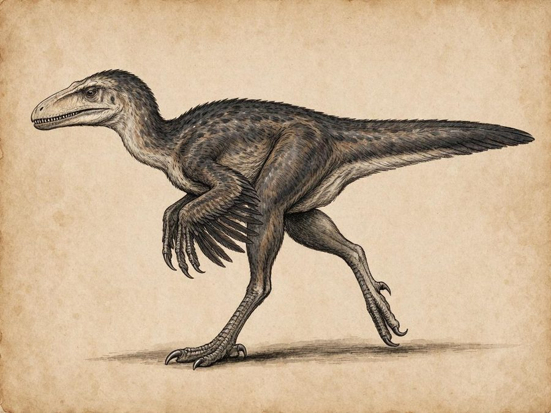
Deinonychus
Common and deadly
The low Green, by day
Feathered raptors the size of a man, with a sickle claw on each foot. They work a trail in packs, some ahead of you and some behind.
Get up high, use fire, or leave them a kill.
set down at rootfast for those who must travel
Every year the Green kills people who thought they knew it. This is what hunters, guides and the Ywen will tell you, if you ask them before you leave.
Children below learn these before their letters.
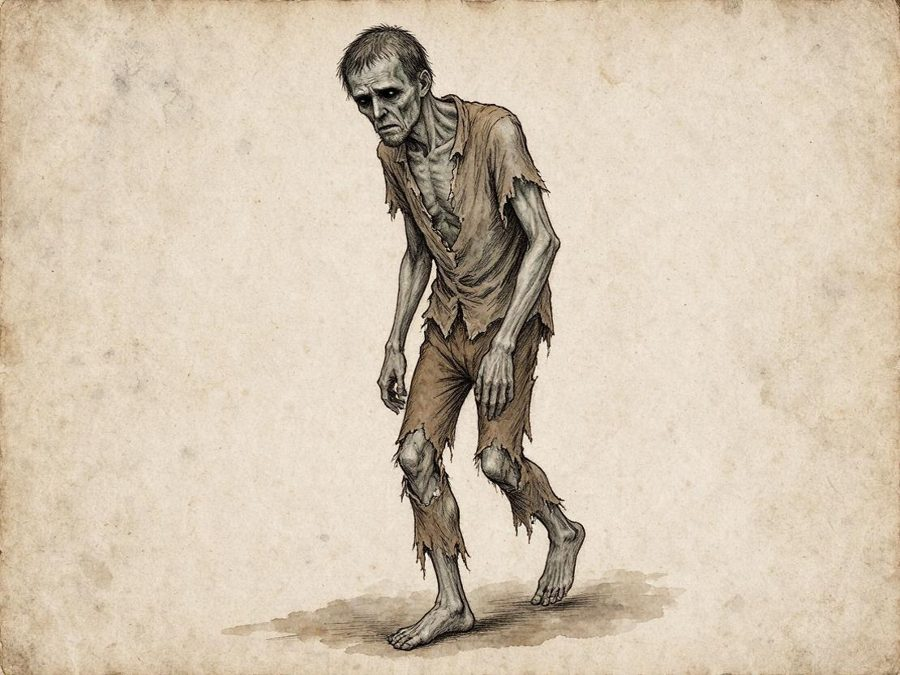
Called the Starved. Deadly.
The Fallow and the low Green, at night
They look like people, or like what is left of people: grey skin, black eyes, the rags of whoever they were. They are quick and silent, and they don't breathe. They come for whatever is alive, the nearest first. Their touch leaves a cold that goes to the bone, and those they kill lie breathing and empty.
People below say the jungle takes whoever goes too far into the Fallow, and gives them back hungry.
Get up a tree or into deep water, and wait for them to find something closer.
These are the animals most likely to kill you. Most of the Green's dead were killed by something on this list.

Common and deadly
The low Green, by day
Feathered raptors the size of a man, with a sickle claw on each foot. They work a trail in packs, some ahead of you and some behind.
Get up high, use fire, or leave them a kill.
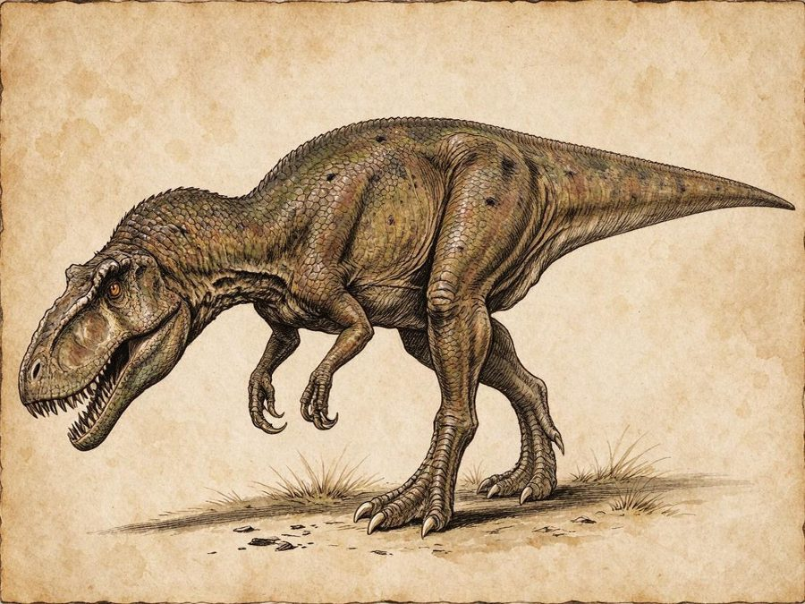
Deadly
Mine roads, at dusk
A huge hunter that follows sound with its head held low. It can take a mule in one bite.
Get into running water or up a cliff. Leave it something to eat.
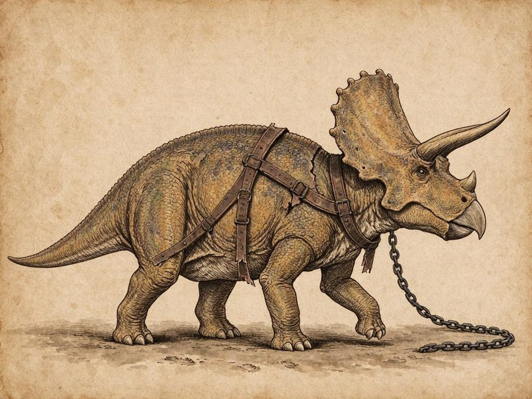
Dangerous when loose
The Spill, by day
Dael's plough beasts. One that slips its harness will charge anything that moves, trailing chain behind it.
Get out of its line and stand still.
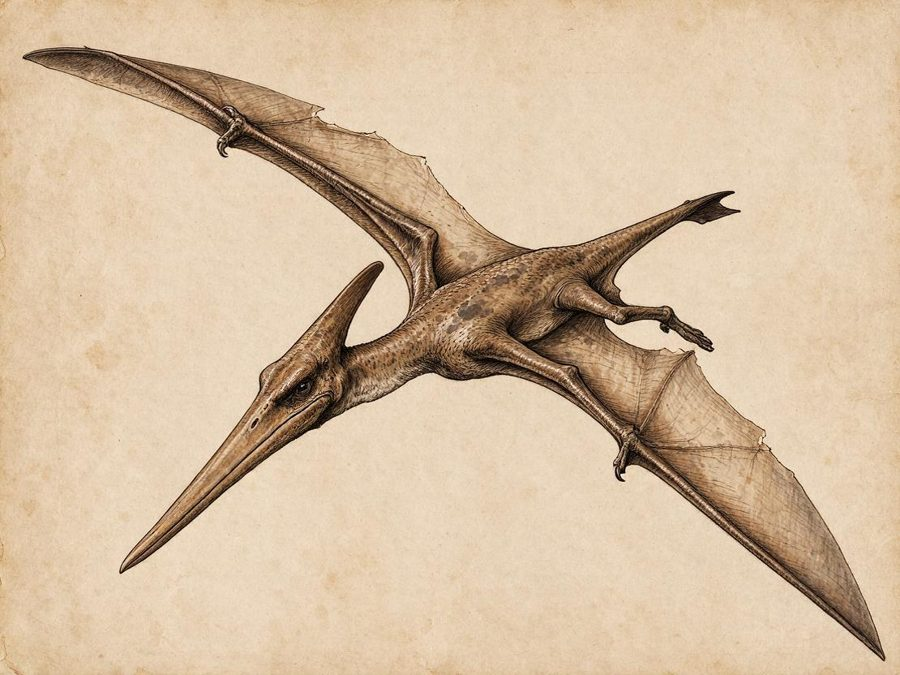
Common
Open roads and rivers, by day
Long-beaked fliers that dive at anything bright: lamps, buckles, polished blades.
Cover anything shiny and get under the trees.
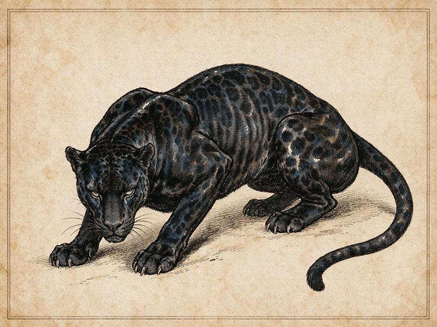
Common and deadly
Everywhere, dusk and night
Lean black cats that hunt from the branches overhead. They drop on the last person in line.
A torch and a shout will usually drive one off.
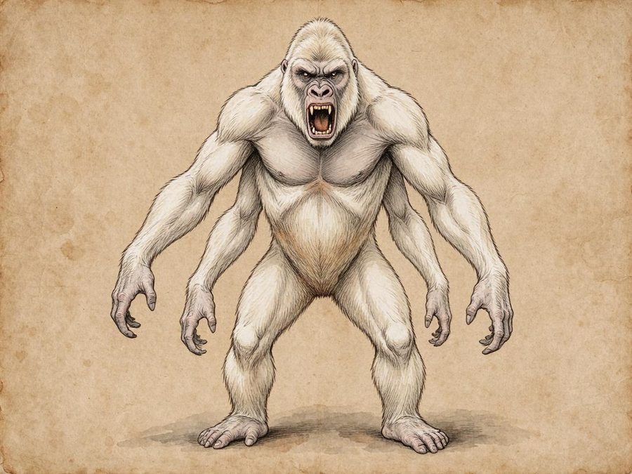
Dangerous
The canopy, by day
White apes with four arms, strong enough to tear a door off a hut. Very protective of their young.
Back away slowly from any troop with young.
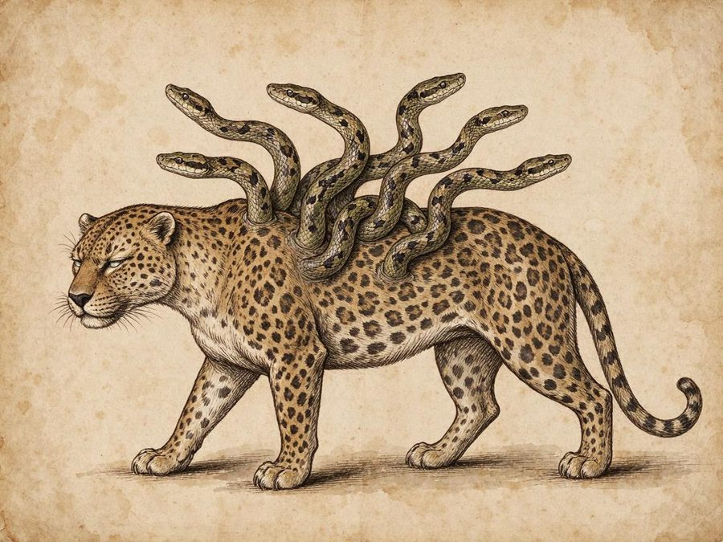
Deadly
The Fallow and the Deep Green, day or night
A great spotted cat with live snakes growing from its shoulders. The snakes strike while the cat holds you.
Keep your distance and use fire. Don't let it close.
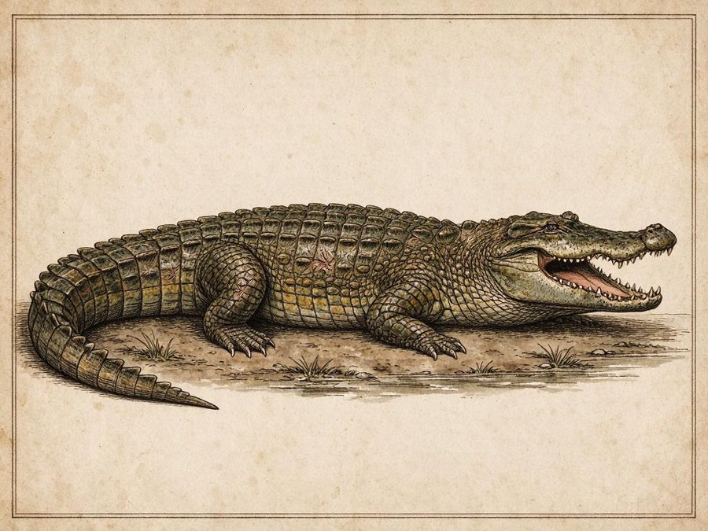
Common and deadly
The Spill and the rivers, always
Bigger than a raft, and very patient. They take people who wash or fetch water at the river's edge.
Stay back from the bank, especially at dusk.
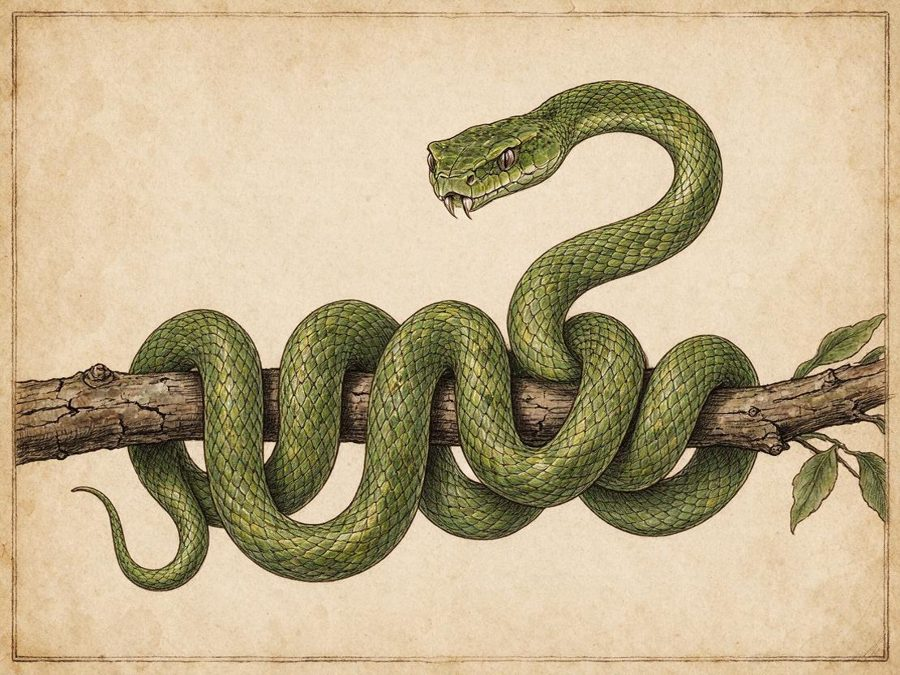
Common
The trees of the low Green
Thin snakes that launch themselves from the branches like thrown spears.
Keep your neck covered, and watch the branches above the trail.
Thin ground changes what lives on it. These have all been seen by people who came back.
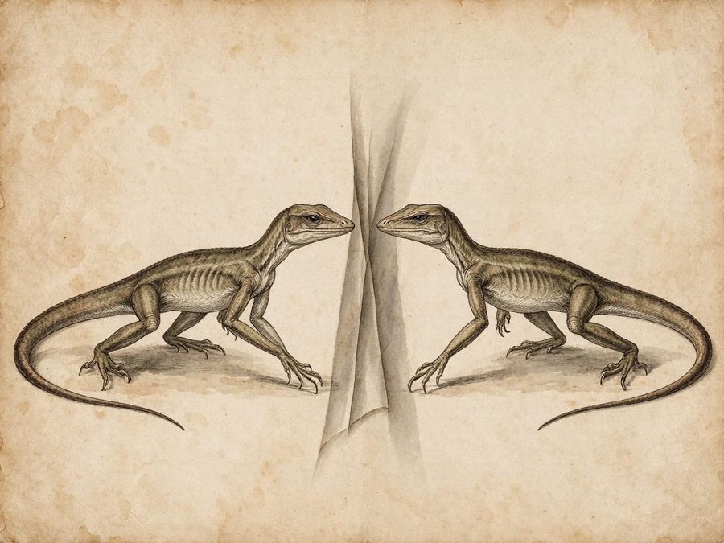
Deadly
The low Green, mostly at night
Lean hunting lizards that step through thin ground and come out behind you. The air folds where one has been.
Cross running water. They won't follow.
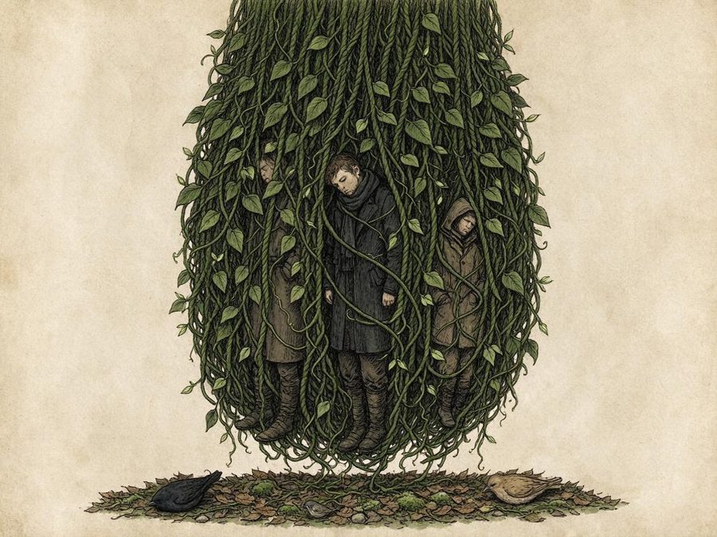
Deadly
Wild ground, always
A mass of vines left behind by some old sleep spell. It puts travelers to sleep and pulls them in. Sleeping birds on the ground are the warning.
Burn it, or cut the root-knot at its heart.
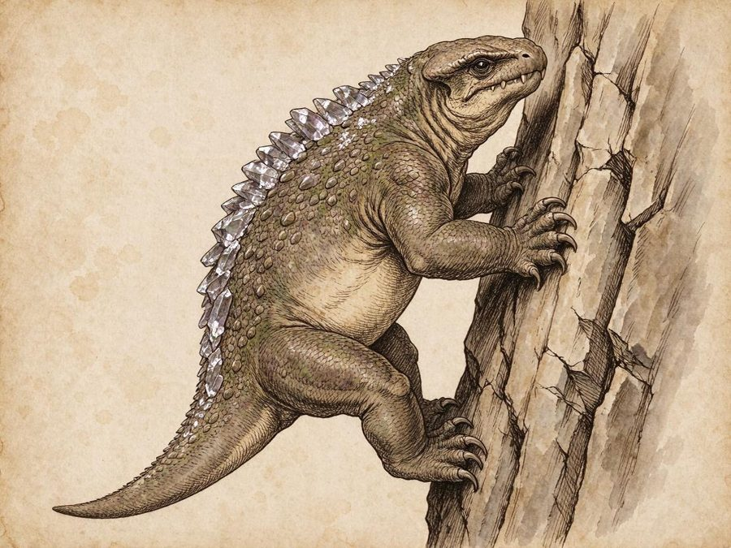
Deadly
The shard-fields of the Hollowcrown
A heavy beast with crystal shards along its spine, somehow light enough to climb sheer rock. Look for scrape marks high on the cliffs.
Leave the shard-fields. It stops at their edge.
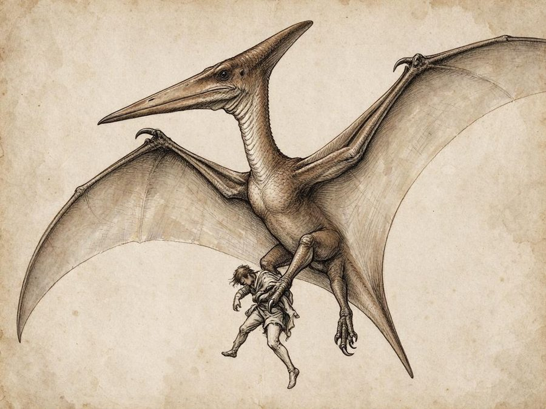
Deadly
The Chain and the high roads, by day
A flier with the wingspan of a skiff. It carries people off. The smaller fliers go silent when one is near.
Get under cover. It won't fly into cloud.
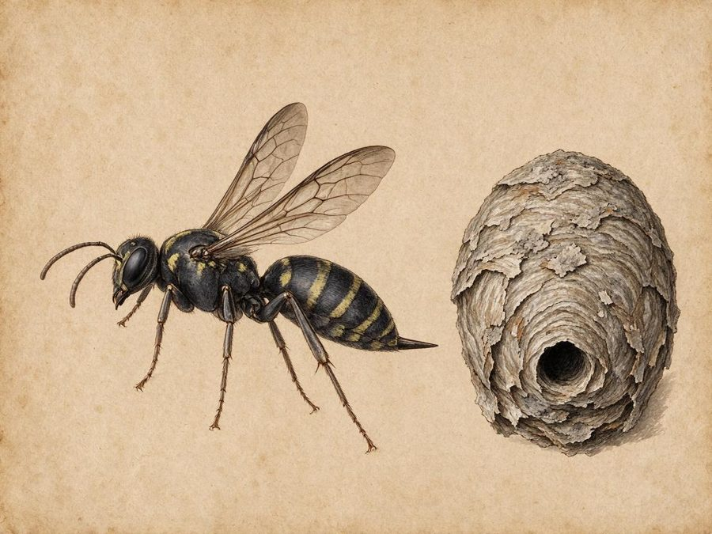
Common
Slough drifts and the Chain, by day
Wasps that nest in the grey dust shed by the cities. The drifts hum when they're home.
Use smoke. A smudge-fire drives them away.
| Drift | Stones that have forgotten how to fall, rising off the path in a swarm. Get under the canopy, or rope yourself to a root. |
| Loose spells | A shimmer like heat-haze that drifts toward anyone casting magic. Stop casting and back away. |
| Musk vines | Yellow flowers whose scent leaves people dazed. Those they catch are found walking with roots in them. |
| Assassin vines | They look like any other vine until they tighten. |
| Walking rot | A heap of jungle rot that moves by itself. Fire doesn't always stop it. |
| Dump-eaters | Huge, filthy creatures that live in the slough dumps under the cities' drift. Don't go near the dumps. |
| The Spill's great frog | Fishers on the lower Spill talk about something the size of a barge. They don't fish that stretch. |
| Quiet walkers | People walking alone, mud to the knees, who answer nothing. They are not known to attack anyone who stands aside. Let them pass. |
| Gleaners | Tasque's people. They travel in threes with a net, a sack and a cage-raft, looking for runaways and debtors. They are polite until they aren't. Deep water or a crowd will discourage them. |
| The Sloughborn | Raiders with bark skin and extra eyes. They take captives. Some will let you pass if you speak against the Families. |
Nobody can prove these. Hunters tell them anyway, and they don't smile when they do.
Hunters tell of someone humming gently in the empty jungle, and saying soft, kind things. They say you should not go to look.
Sometimes travelers find objects laid out in neat rows, sorted by size. Whatever you do, turn back.
A choir singing in the trees, perfectly in tune, far from any road.
Someone you lost calls to you from the trees, and knows your name. People say they always get one small thing wrong.
Dozens of quiet voices, all saying your name. The advice is to get into deep water and stay there.